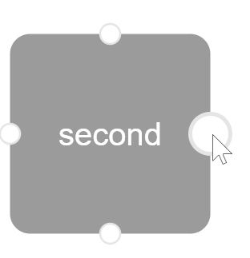
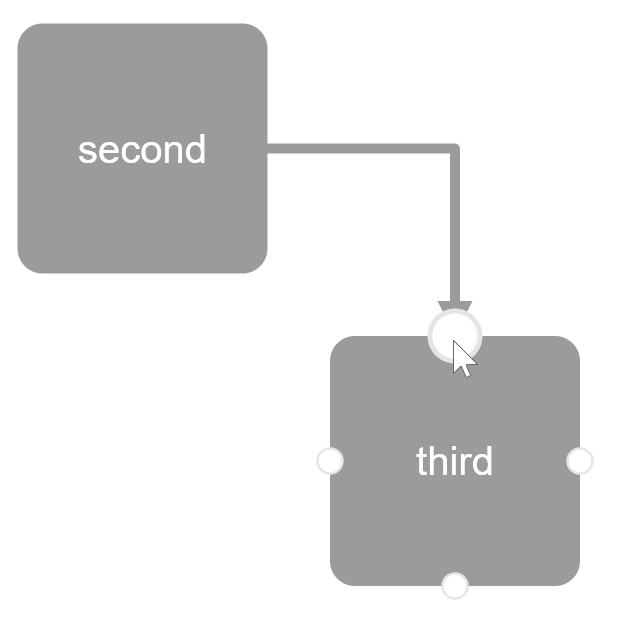

workflow-svg.js
workflow-svg.js is an easy to use library to visualize an workflow and to adapt it. Just try it!
You can drag and drop the workflow entities. On the edges of a entity you can create a line to another entity. Just select the starting point ...
... and then select the target point. That is all!
You can configure and define your entities and lines. You can define colors, size and even classes to apply your style from a css.
Try to connect "new" and "in progress"!
Output:
...change something on the left side
workflow-svg.js is small and light. It has only two other dependencies which you need to import.
workflow-svg.js is easy to use. It has just 4 methods. Simple but usefull.